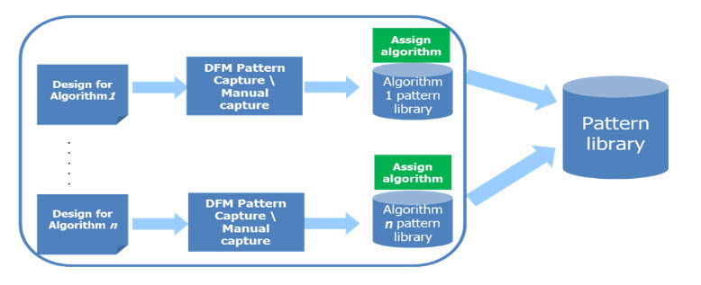
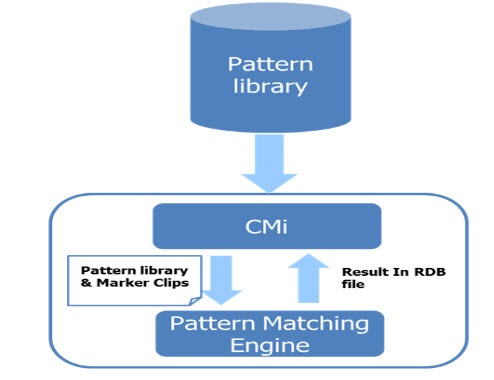

The overall process
of setting up automatic metrology algorithm identification can be summarized
in two phases.
Procedure
- Create a pattern library.
A pattern library is a collection of one or more patterns created within
the Pattern Library Manager or captured using one of the pattern
capture operations. When the pattern library is filled with the
patterns you want to search for and ready to be included in a pattern
matching Calibre run, the pattern library is then exported from
the Pattern Library Manager to create an SVRF DMACRO pattern file.
There are different methods
to create pattern libraries. See “Pattern Library Creation” for further information.
Figure 1. Pattern Creation Flow
- Use CMi to set up and run
the Calibre pattern matching engine to identify the metrology algorithm.
The created pattern matching
library is used as input to CMi. The CMi interface eases the process
of running the Calibre pattern matching engine and automatically
sets the proper Metrology Algorithm values after each run.
See “Using Automatic Identification in CMi” for further information.
Figure 2. CMi Automatic Algorithm
Identification Flow